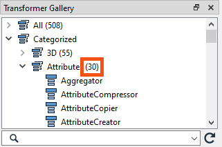
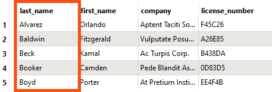

You don’t have to follow along with Jennifer using FME in this lesson. Instead, read her story and then do the exercise yourself.
After completing this lesson, you’ll be able to:
You don’t have to follow along with Jennifer using FME in this lesson. Instead, read her story and then do the exercise yourself.

When Jennifer first began using FME, she found the list of almost 500 transformers daunting. One of the most common challenges new FME users face is finding the correct transformer for a given task. However, Jennifer learns that most users only focus on the subset of transformers relevant to their day-to-day workflow. Since Jennifer doesn’t plan on working with raster data in the near future, there is a whole category of raster-dedicated transformers that she doesn’t need to know. She knows she doesn’t need to be familiar with every transformer to use FME effectively.
As she learned FME, Jennifer found the following resources useful for learning about transformers:
| Resource | Why use it? |
| Searching using Quick Add in FME Workbench | Quickly search transformers, see the Help, and add to the canvas to try them out. |
| Browsing or searching using the Transformer Gallery in FME Workbench | Filter transformers by category and search directly in Workbench. |
| Using the FME Transformer Reference Guide | Contains snippets from Help to explain transformer use cases. |
The online Transformer Gallery allows you to filter transformers by category and sort by most-used, plus links to Help. However, it will be removed soon as we update Quick Add to allow you to sort results by popularity.
Jennifer must find a new transformer for a different workspace that retrieves today’s weather from the Weather.gov API. She finds that the API call results (a web connection request for data located on the web) contain attributes she doesn’t need. From her experience, she knows it would be tedious to remove them with an AttributeManager or AttributeRemover manually. She turns to her resources to find a transformer to help her.
You can view the optional example workspace linked in Resources above to see Jennifer’s Weather.gov workspace, but this example is just for reference.
First, she tries searching for some keywords in Quick Add. She opens her workspace and starts typing keywords. First, she tries “deleter,” but this search is too specific and doesn’t yield any attribute-related results. By default, Quick Add searches for transformer names only, not descriptions. She presses the Tab key to search in the Help text, which results in transformers that don’t meet her requirements.
She tries some more keywords in both search modes: “attribute,” “remover,” “eraser,” “simplifier,” etc. Some of these searches produce helpful results but still contain too many transformers.

Jennifer decides to look in the Workbench Transformer Gallery categories. She sees the Attribute category.

She scans the attribute transformers and their descriptions in Help. This method produces a promising result: the AttributeKeeper, one of the most-used attribute transformers! Its description reads, “Removes all attributes and list attributes, except the specific ones you specify to be retained.” That sounds like it should work.
Jennifer adds an AttributeKeeper using Quick Add. She connects it to her workflow, sets the parameters, and finds it does just what she wants. She can choose the forecast attribute she wants to keep and remove the rest.
If Jennifer’s use case was more complex, she might have considered using the Transformer Reference Guide or posting on the Community Forums for help.
The AttributeKeeper is a performance booster for your workspaces. Use it early in your workspace to remove any unnecessary attributes. Not having to process those will let your workspace run much faster.
You’ve read about Jennifer’s search for the AttributeKeeper. Now it’s your turn to look for a transformer!
Using the techniques above and the starting workspace (in FME Workbench 2023.0 or later), find a transformer that will order your features in ascending alphabetical order by “last_name.” Once you find it, connect it between the GeometryFilter and the BusinessOwners feature type and use it to order your features. You can use Visual Preview with feature caching to confirm the features are in order. Your output should look like this:
